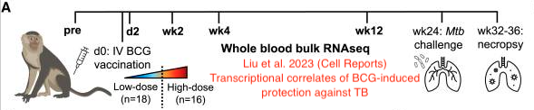
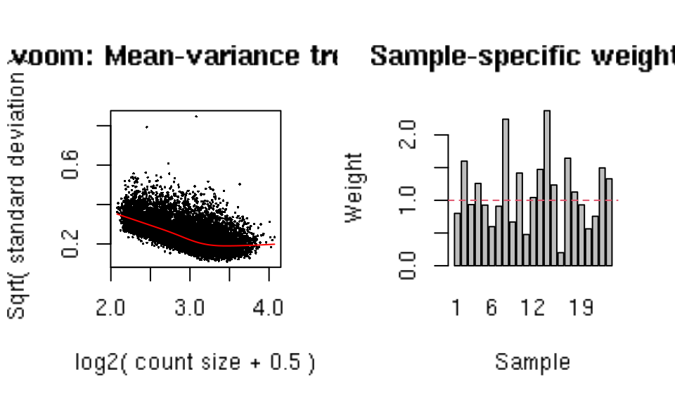
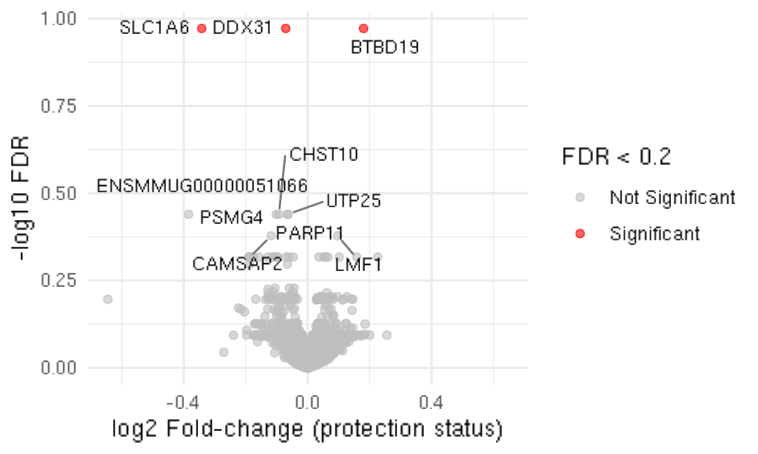
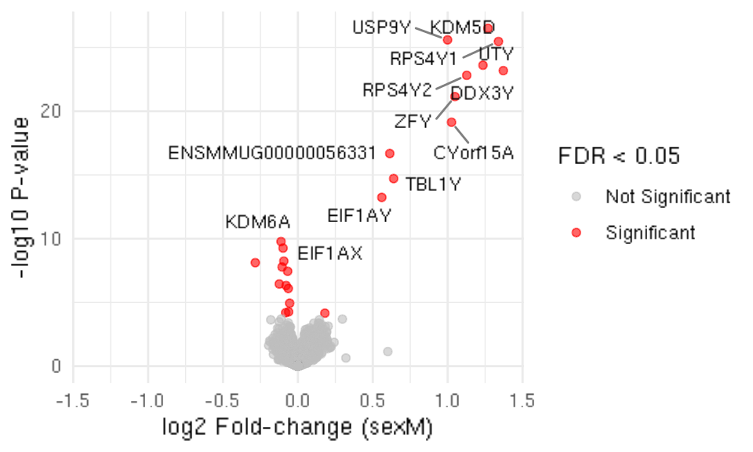

library(readr)
library(tidyverse)
library(edgeR)
library(kimma)
library(ggplot2)
library(dplyr)
library(ggrepel)
# NOTE --- REPLACE the <data_dir> FOLDER DESTINTATION AS APPROPRIATE
# data_dir <- 'X:/fast/gilbert_p/fg_data/SEATRAC/TB_hackday_2024/processed_data'
data_dir <- '/home/processed_data'
ncts <- readr::read_csv(file.path(data_dir, "liu_etal_counts.csv"))
meta <- readr::read_csv(file.path(data_dir, "liu_etal_metadata.csv"))Identifying whole-blood gene expression after IV BCG in NHP that is associated with protection from Mtb challenge
Data
This TB hackday script uses (pre-processed) RNA sequencing data from the following study:
- Liu et al. 2023 (Cell Rep Med) Blood transcriptional correlates of BCG-induced protection against tuberculosis in rhesus macaques
The animals in that study were also the animals in these two related studies:
Darrah et al. 2023 (Cell Host Microbe) Airway T cells are a correlate of i.v. Bacille Calmette-Guerin-mediated protection against tuberculosis in rhesus macaques
Darrah et al. 2020 (Nature) Prevention of tuberculosis in macaques after intravenous BCG immunization
Background
In the earlier “route” study Darrah et al. (2020) immunized NHP with BCG by varying routes. After 24 weeks the animals were challenged in the lung with Mycobacterium tuberculosis (Mtb). In a follow-up IV BCG “dose” study Darrah et al. (2023) immunized 34 NHP with various doses of intravenously (i.v.) BCG. Again the animals were challenged after 24 weeks with Mtb. The Liu et al. study conducted whole-blood RNA sequencing on samples from NHP in both the Darrah et al. studies.

Hypotheses for hacking
- The original manuscript first identified genes that were differentially upregulated after BCG and then looked for association with protection. Can we directly identify genes that are associated with protection? Does the model need adjustment for covariates? e.g., sex, route, dose
- Can we use clustering/WGCNA to identify gene modules or GSEA to identify pre-existing gene modules associated with protection?
- How well do the genes classify protected and non-protected animals using CV-AUC?
- Does baseline expression of the BCG-responsive genes associate with protection?
Setup R and load the data.
Load relevant packages. Change <data_dir> variable as appropriate.
Load the pre-processed RNA sequencing data. There are two important files:
liu_et_al_counts.csvcontains log-transformed/normalized counts that were computed from raw counts by the study authors using DESEQ2 variance stabilizing transform (vst). This should be appropriately distributed for limma as well. The table contains 312 columns, with one columngeneand the remaining columns matchingsampleids in the metadata. There are 22,496 genes in the dataset.liu_etal_meta.csvcontains all the 29 sample-level metadata that is available for these samples and animals includingsampleid,studyid,animalid,visit,route,dose_group,log_mtb_cfu, andprotect_outcome.
Prepare the data for differential gene expression analysis with Voom
The sampleid columns of the ncts variable and the rows of sampleid in the meta variable match. For this first analysis we will focus on the NHP that received high-dose IV BCG and the blood from 2 weeks after immunization, creating subset tables indicated by _ss variables. Then we initialize the DGEList object and create a limma voom model with a design matrix to identify genes that are associated with protection.
In the accompanying “mean-variace” plot the x-axis represents the average expression levels of genes across all samples. The y-axis represents the square-root of the variance (i.e., standard deviation) of gene expression levels. It shows how the variance changes with respect to the mean expression. Every dot is a gene and the trend line shows the relationship between the mean and the variance. Note that the variance is relatively stable across expression levels and the relationship is smooth; this is good for analysis and voom will use this relationship to adjust the model fits of each gene. If you re-run the code block without the filtering you will see the impact on the mean-variance plot.
Notice also that we specify a design matrix which includes covariates sexM (male = 1)
# Focus initial analysis on high-dose IV BCG group and the pre-vaccine (week 2) time point
meta_ss = meta %>% filter(vax_group == "IV-HD" & visit == "wk2")
keep_ids = meta_ss %>% pull(sampleid)
keep_ids = c('gene', keep_ids)
ncts_ss = ncts %>% dplyr::select(any_of(keep_ids))
# Discard genes that have low counts/prevalence
filter = rowSums(ncts_ss > 1) >= (0.5 * ncol(ncts_ss))
ncts_ss = ncts_ss[filter, ]
# Create the object for differential expression testing
dge_o = DGEList(counts=ncts_ss,
genes=ncts_ss[, 1],
samples=meta_ss,
group=meta_ss[['protect_outcome']])Setting first column of `counts` as gene annotation.# Specify the model/design matrix
design_temp = model.matrix(~protect_outcome + sex, data=meta_ss)
# Create the voom object and fit the model
v <- voom(dge_o, design=design_temp, plot=TRUE)
Exercise
Re-run the code block above without the filtering you will see the impact on the mean-variance plot. Use the code above but comment out lines filter = rowSums(ncts_ss > 1) >= (0.5 * ncol(ncts_ss)) and ncts_ss = ncts_ss[filter, ]. How does this effect the mean variance plot? **Make sure to rerun the code correctly so the object v includes filtering sparsely detected genes.*
Fit the model to identify genes associated with protection
# vvwts <- voomWithQualityWeights(dge_o, design=design_temp, normalize.method="none", plot=TRUE)
fit = lmFit(v, design_temp)
# Estimate contrasts and p-values
fit = eBayes(fit, robust=TRUE)
summary(decideTests(fit, adjust.method="fdr", p.value = 0.05)) (Intercept) protect_outcomeprotected sexM
Down 0 0 9
NotSig 0 12608 12588
Up 12608 0 11results <- topTable(fit, adjust="BH", coef="protect_outcomeprotected", p.value=1, number=Inf, resort.by="P")
head(results %>% dplyr::select(gene, logFC, AveExpr, P.Value, adj.P.Val), 20) gene logFC AveExpr P.Value adj.P.Val
1174 BTBD19 0.17618221 5.827599 0.0001194138 0.8444249
2696 DDX31 -0.07820278 6.270161 0.0002418336 0.8444249
9608 SLC1A6 -0.31050031 5.598826 0.0002840473 0.8444249
3372 ENSMMUG00000051066 -0.40082591 5.553205 0.0003095157 0.8444249
2032 CHST10 -0.09807608 6.226276 0.0003348766 0.8444249
1416 CAMSAP2 -0.13207738 5.986679 0.0006187205 0.9995123
7483 PDE9A -0.14410776 5.960126 0.0014359107 0.9995123
418 AMIGO1 -0.14780576 5.962352 0.0014513132 0.9995123
4376 GPRASP1 -0.08369987 6.442407 0.0014748601 0.9995123
9615 SLC22A23 -0.20117273 5.959075 0.0015409611 0.9995123
11724 UTP25 -0.06384406 6.354840 0.0015889494 0.9995123
4917 IGKV6D-41 -0.16867930 5.627697 0.0023253058 0.9995123
7785 PLB1 -0.19433317 5.729398 0.0029019945 0.9995123
23 ABCA7 0.04805037 6.792880 0.0032470334 0.9995123
5675 LMF1 0.08566659 6.469537 0.0033120106 0.9995123
11629 UNC5B -0.10114192 6.019161 0.0033299096 0.9995123
7373 PARP11 -0.06640810 6.389205 0.0033579650 0.9995123
6015 MBD5 -0.08238990 6.136716 0.0034439121 0.9995123
5514 KYAT3 -0.05089927 6.245871 0.0034522000 0.9995123
343 AKAP6 -0.17369972 5.549775 0.0040340496 0.9995123Create a volcano plot for single-gene association with protection
A volcano plot shows log fold-change on the x-axis and negative log10-tranformed p-value on hte y-axis. Each dot repressents a gene. In this case fold change is based on grouping variable of protection_outcome protected and un-protected, with points the right enriched in animals with protected status, after adjusting for the sex variable.
# Add a column for significance based on FDR
results <- results %>%
mutate(Significance = ifelse(adj.P.Val < 0.05, "Significant", "Not Significant"))
# Select the top 10 genes based on adjusted p-value for labeling
top_genes <- results %>%
arrange(adj.P.Val) %>%
slice_head(n = 10)
max_logFC <- max(abs(results$logFC), na.rm = TRUE)
# Create the volcano plot
volcano_plot <- ggplot(results, aes(x = logFC, y = -log10(P.Value))) +
geom_point(aes(color = Significance), alpha = 0.6) +
scale_color_manual(values = c("Significant" = "red", "Not Significant" = "grey")) +
geom_text_repel(data = top_genes,
aes(label = gene),
max.overlaps = 10,
box.padding = 0.3,
point.padding = 0.3,
segment.color = "grey50",
size = 3) +
xlim(c(-max_logFC, max_logFC)) +
theme_minimal() +
labs(
x = "log2 Fold-change (protection status)",
y = "-log10 P-value",
color = "FDR < 0.05") +
theme(plot.title = element_text(hjust = 0.5))
volcano_plot
See if there are any genes significantly associated with sex of the animals
See if you can modify the code above to test for differentially expresseed genes in the male animals. Change the design_temp model.matrix and coef argument in topTable function. See below.
# Focus initial analysis on high-dose IV BCG group and the pre-vaccine (week 2) time point
meta_ss = meta %>% filter(vax_group == "IV-HD" & visit == "wk2")
keep_ids = meta_ss %>% pull(sampleid)
keep_ids = c('gene', keep_ids)
ncts_ss = ncts %>% dplyr::select(any_of(keep_ids))
# Discard genes that have low counts/prevalence
filter = rowSums(ncts_ss > 1) >= (0.5 * ncol(ncts_ss))
ncts_ss = ncts_ss[filter, ]
# Create the object for differential expression testing
dge_o = DGEList(counts=ncts_ss,
genes=ncts_ss[, 1],
samples=meta_ss,
group=meta_ss[['protect_outcome']])Setting first column of `counts` as gene annotation.# Specify the model/design matrix
design_temp = model.matrix(~sex, data=meta_ss)
# Create the voom object and fit the model
v <- voom(dge_o, design=design_temp, plot=TRUE)# vvwts <- voomWithQualityWeights(dge_o, design=design_temp, normalize.method="none", plot=TRUE)
fit = lmFit(v, design_temp)
# Estimate contrasts and p-values
fit = eBayes(fit, robust=TRUE)
summary(decideTests(fit, adjust.method="fdr", p.value = 0.05)) (Intercept) sexM
Down 0 10
NotSig 0 12587
Up 12608 11results <- topTable(fit, adjust="BH", coef="sexM", p.value=1, number=Inf, resort.by="P")
head(results %>% dplyr::select(gene, logFC, AveExpr, P.Value, adj.P.Val), 20) gene logFC AveExpr P.Value adj.P.Val
5321 KDM5D 1.25632295 5.921612 6.859879e-26 7.430280e-22
11714 USP9Y 0.98492730 6.162297 1.178661e-25 7.430280e-22
9019 RPS4Y1 1.35060589 6.319479 1.152383e-23 4.843081e-20
11729 UTY 1.20815159 5.907697 1.701311e-23 5.362533e-20
2700 DDX3Y 1.35197833 6.062527 3.180241e-22 8.019295e-19
9020 RPS4Y2 1.12788019 6.068310 1.102439e-21 2.316592e-18
12172 ZFY 1.04924250 5.969083 9.400371e-20 1.693141e-16
2588 CYorf15A 0.98874078 5.789767 2.568331e-18 4.047690e-15
3383 ENSMMUG00000056331 0.58691530 6.179036 8.687019e-15 1.216955e-11
10510 TBL1Y 0.64100885 5.766605 2.492947e-14 3.143108e-11
3181 EIF1AY 0.55814265 5.961327 9.973134e-12 1.143102e-08
3180 EIF1AX -0.10152183 6.635283 2.215256e-09 2.327496e-06
5322 KDM6A -0.10914620 6.621208 3.177046e-09 3.081245e-06
5948 MAP7D2 -0.29708849 5.736375 5.097363e-08 4.590539e-05
12171 ZFX -0.10112183 6.602602 1.523257e-07 1.280349e-04
8157 PRKX -0.10130668 6.741735 1.047612e-06 8.255185e-04
11477 TXLNG -0.13141781 6.298410 5.623139e-06 4.170384e-03
5320 KDM5C -0.07252475 6.862558 8.104695e-06 5.676889e-03
10361 SYAP1 -0.07187239 6.487668 1.267878e-05 8.413375e-03
2527 CXHXorf38 -0.06096521 6.681437 2.858646e-05 1.802090e-02# Add a column for significance based on FDR
results <- results %>%
mutate(Significance = ifelse(adj.P.Val < 0.05, "Significant", "Not Significant"))
# Select the top 10 genes based on adjusted p-value for labeling
top_genes <- results %>%
arrange(adj.P.Val) %>%
slice_head(n = 30)
max_logFC <- max(abs(results$logFC), na.rm = TRUE)
# Create the volcano plot
volcano_plot <- ggplot(results, aes(x = logFC, y = -log10(P.Value))) +
geom_point(aes(color = Significance), alpha = 0.6) +
scale_color_manual(values = c("Significant" = "red", "Not Significant" = "grey")) +
geom_text_repel(data = top_genes,
aes(label = gene),
max.overlaps = 10,
box.padding = 0.3,
point.padding = 0.3,
segment.color = "grey50",
size = 3) +
xlim(c(-max_logFC, max_logFC)) +
theme_minimal() +
labs(
x = "log2 Fold-change (sexM)",
y = "-log10 P-value",
color = "FDR < 0.05") +
theme(plot.title = element_text(hjust = 0.5))
volcano_plotWarning: ggrepel: 15 unlabeled data points (too many overlaps). Consider
increasing max.overlaps
Redo the analysis using a mixed-effects model to incorporate data from additional visits and account for the longitudinal design
meta_ss = meta %>% filter(vax_group == "IV-HD" & (visit == "wk2" | visit == "d2"))
keep_ids = meta_ss %>% pull(sampleid)
keep_ids = c('gene', keep_ids)
ncts_ss = ncts %>% dplyr::select(any_of(keep_ids))
# Discard genes that have low counts/prevalence
filter = rowSums(ncts_ss > 1) >= (0.5 * ncol(ncts_ss))
ncts_ss = ncts_ss[filter, ]
dge_o = DGEList(counts=ncts_ss,
genes=ncts_ss[, 1],
samples=meta_ss,
group=meta_ss[['protect_outcome']])Setting first column of `counts` as gene annotation.design_temp=model.matrix(~protect_outcome + sex + visit, data=meta_ss)
v <- voom(dge_o, design=design_temp, plot=FALSE)
# Can't figure out why I get this error here
# lme/lmerel model: expression~protect_outcome+sex+visit+(1|animalid)
# Error in `[.data.frame`(weights.format, order(rownames(weights.format)), :
# undefined columns selected
#klm <- kmFit(dat = v,
# model = "~protect_outcome + sex + visit + (1|animalid)",
# run_lme = TRUE,
# libraryID="sampleid",
# patientID="animalid",
# use_weights = TRUE,
# metrics = TRUE,
# run_contrast = FALSE,
# processors=1)
#summarise_kmFit(fdr = klm$lm)
#plot_volcano(model_result = klm,
# model = "lm", variables = "protect_outcomeprotected",
# y_cutoff = 0.05)